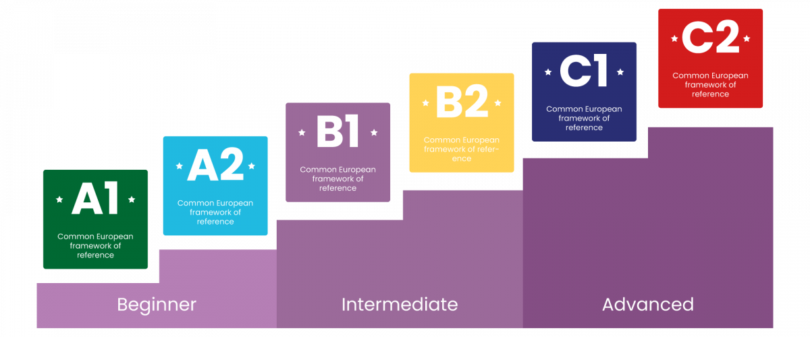

Genel Almanca programlarımızda amacımız, yalnızca Almanca dil becerilerini
geliştirmek değil, aynı zamanda öğrencilerimizin 21. yüzyılda gelecekteki akademik
ve kariyer başarılarına hazırlanmalarına yardımcı olacak aktarılabilir beceriler
geliştirmektir.
Akademik Almanca Kurlarımız

Eğitim Süresi: 12 ay
A1 – 3 ay; A2 – 3 ay
B1 – 3 ay; B2 – 3 ay
Bulut Dil Kursu, Uluslararası Dil Akreditasyonu (Council of Europe) ve Avrupa Dil
Ödülü (Uzaktan Almanca Sınavı-UTS) sahibi, köklü bir Türkçe ve Yabancı Dil
uygulama, araştırma, ölçme ve değerlendirme merkezi olarak 2020’ten günümüze
faaliyet göstermektedir. Amacı akademik yabancı dil sınavlarına hazırlamaktır.